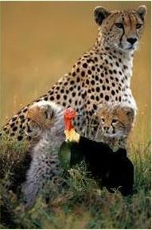

Saint Edna's Turkey
-Saint Edna had a turkey,
-She named it pinky
-She liked to dress pinky up like a little sailor
-And prance him around the yard like a little gobble puss
-According to Saint Edna, she saved pinky from being killed at the super market
-The thing was, the turkey didn't look like a turkey at all, it was
small, and narrow, and yellow, with a curve
-Its weird, sometimes I hear people mistakenly call turkeys bananas,
and I correct them, isn't that weird?